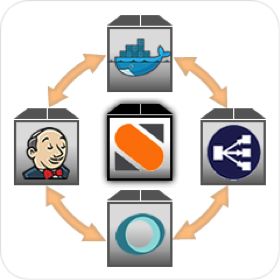
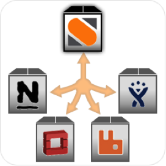
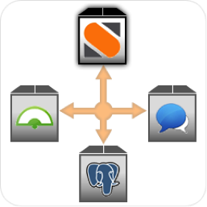

January 27, 2015
Guest post by Prashant Deva, Founder and CTO of Chronon Systems, parent company of DripStat
If you run an application on a JVM, it is inevitable that you are at some point going to run into issues such as:
Since the above is inevitable, you want to ensure your infrastructure is set to automatically detect and deal with the above issues. Otherwise you are looking at downtime sometime in the future.
With a combination of DripStat and StackStorm, we are moving in a world of fully automated data centers. Let’s see how we can use them to completely automate dealing with above issues so we don’t get any downtime.
January 23, 2015
by Lakshmi Kannan
This week was crazy good at StackStorm. We blogged about the 0.7 release. Though our main focus was around the release, we managed to get some nifty changes in our integrations and platform.
January 23, 2015
by Evan Powell
This post originally appeared January 22, 2015 on VentureBeat.
IT is undergoing its most important shift in at least 20 years, and devops is at the core of this transformation. Devops is moving to the enterprise, but barriers to adoption still remain. Enterprises should take these challenges into account when they are attempting to achieve the enhanced agility that top operators have obtained.
In this article, I discuss some of these under-appreciated barriers. In a subsequent article, I’ll dig into approaches I’ve seen effective in addresses these barriers.
Here are a few points worth raising that enterprises need to understand before assuming the path to devops will be an easy one:
January 20, 2015
by James Fryman
We’re off with a bang this week, starting to roll out several new core platform features, and showing off how StackStorm can integrate into systems of all types.
We love showing off our platform, and this week we’re releasing the Continuous Integration/Continuous Delivery Canary Pipeline. How about that for a title? We’ve just been lovingly calling it ‘the canary’. The aim of showing this is to demonstrate the flexibility of StackStorm as it integrates into many different tools and workflows. The code itself is pretty opinionated about how it works, but much of this code is built to be reusable, and we’re including all of the infrastructure components necessary to build and deploy the pipeline itself so you can take a look. We’re hoping it gets your imagination going, so please check it out, and let us know your thoughts.
January 20, 2015
by Lakshmi Kannan
With the new year comes a new release! Highlights of StackStorm v0.7 are below (you can read our v0.6 release notes here).
Sensors can be long running. If sensors are written to poll external sources (for example, we blogged about our Twitter sensor), it would be awesome to store state information in some place to de-dupe already processed events or even save markers (say, timestamps) to know what events have already been processed. Our “dogfooding” experience helped us take a user centric view and with that, we introduced a way for sensors to save state to key value store.
January 20, 2015
by James Fryman
There have been so many times when I have been on both the receiving end and giving end of this conversation, and it goes something like this:
Me: Man, this awesome toolchain at Company X really makes it easy to ship software!
Friend: How can I get my hands on that hotness!?
Me: Well…. um…
And the conversation shifts… and the involved engineers begin discussing and sharing the good and bad about the toolchain, things that they want to do, how it’s helped… you get the idea. Unfortunately, the best that the receiver is going to get are the abstract ideas about these tools. Wonderful after-work discussion, but really horrible in actually helping share craft to make all of our jobs easier and more efficient.
Let’s face it. If it’s difficult to share small code snippets with each other, forget about it when talking about trying to share entire process toolchains. Oftentimes, they are hyper-specialized to a specific company, tightly coupled with systems. There has to be a better way to share operational patterns while allowing for the tweaks and knobs that are unique to each company.
This is a problem begging to be solved, and we’re taking a pass at it. And what better way to do that then to show off what can be done with StackStorm with a Continuous Delivery/Continuous Integration Pipeline.
January 13, 2015
by Patrick Hoolboom
The StackStorm community repo has a rich integration pack for EC2 and Route53 action that you can find inside the StackStorm Exchange. These actions are incredibly useful but they are just the building blocks. The real power of using StackStorm actions comes when they are stitched together into workflows. I’ve taken the two basic workflows we use for EC2 instance lifecycle management and genericized them, then added them to the AWS integration pack. I’m going to go over how these can be used to greatly simplify creation and termination of instances.
At StackStorm we needed a way to rapidly provision VMs that had all of our bootstrapping done…and it had to be easy to do from the command line or StackStorm UI. This version of the workflow has been simplified to remove some of our internal bootstrapping steps but still reduces the entire process of instance creation, DNS registration, and basic bootstrapping to a single command.
January 9, 2015
by Patrick Hoolboom
It has been a couple weeks since we posted an update but don’t worry, we’ve kept plenty busy! The StackStorm office has been buzzing preparing for our upcoming release and we have seen a fair bit of new content added to StackStorm Exchange.
Changes to StackStorm Exchange include:
GitHub
We are really excited about the new GitHub pack. It adds a Github repository sensor that emits triggers for new issues, issue comments, forks, or repository stars. In addition to the standard GitHub events there are also actions to gather GitHub traffic and clone statistics. This works fantastic in conjunction with the Librato pack mentioned below. For actions you can now add comments to an issue or pull request as well as status to a commit.
January 8, 2015
by Evan Powell
This post originally appeared in Virtual-Strategy Magazine.
We are gaining greater insight and knowledge into how high-performing IT operators are using Docker, OpenStack and the overall approach called DevOps. As these solutions continue to be integrated at an accelerated rate, I expect two specific terms will begin to receive much more investigation: “infrastructure as code” and “event driven operations.”
According to research conducted by Gene Kim, Jez Humble and Dr. Nicole Forsgren Velasquez – in collaboration with Puppet Labs – the primary determinant of success whenmoving towards the highly-automated and extremely dynamic approach to building and operating software called DevOps is that all of your configurations are source controlled. This approach is often referred to as infrastructure as code, meaning that you treat the instructions and configurations for your IT truly as code – they reside in the same systems as code resides in, whether that is GitHub or some other such system.
December 22, 2014
by Tomaz Muraus
The StackStorm automation platform is very powerful and flexible. Our users most commonly use it to perform tasks such as Continuous Integration & Continuous Deployment, Facilitated Troubleshooting and Remediation as a Service.

Continuous Integration & Continuous Deployment, Facilitated Troubleshooting and Remediation as a Service, three mostly common use-cases.
Because StackStorm is an extensible automation platform, you are not limited to these three use cases. You can use it to perform almost any kind of automation you can think of.
Today, let’s look at a slightly different use case. I’ll demonstrate how to monitor Twitter in near real-time for matching keywords and relay tweets matching those keywords to a Slack channel.